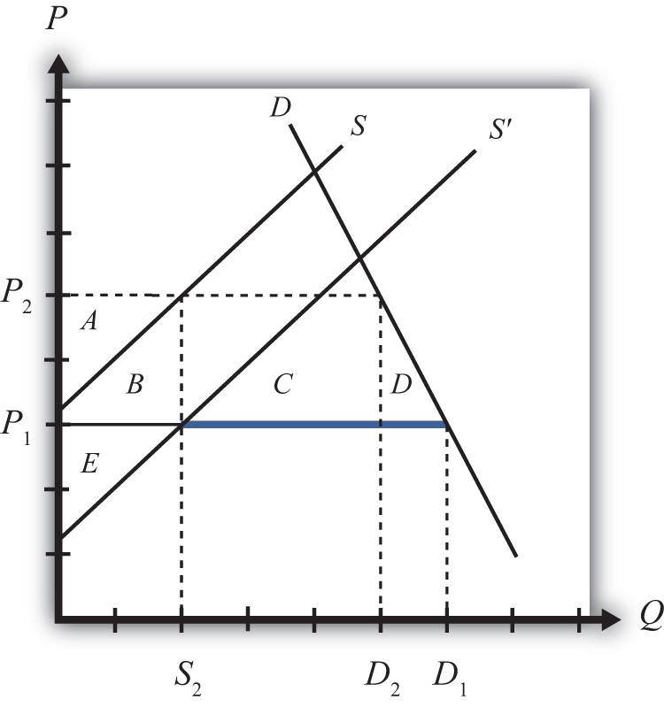

One of the most notable arguments for protection is known as the infant industryAn industry, most often in a developing country, that cannot compete in international markets in free trade but that, if given time to learn and develop, could be world-class efficient. argument. The argument claims that protection is warranted for small new firms, especially in less-developed countries. New firms have little chance of competing head-to-head with the established firms located in the developed countries. Developed country firms have been in business longer and over time have been able to improve their efficiency in production. They have better information and knowledge about the production process, about market characteristics, about their own labor market, and so on. As a result, they are able to offer their product at a lower price in international markets and still remain profitable.
A firm producing a similar product in a less-developed country (LDC), on the other hand, would not have the same production technology available to it. Its workers and management would lack the experience and knowledge of its developed country rivals and thus would most likely produce the product less efficiently. If forced to compete directly with the firms in the developed countries, the LDC firms would be unable to produce profitably and thus could not remain in business.
Protection of these LDC firms, perhaps in the form of an import tariff, would raise the domestic price of the product and reduce imports from the rest of the world. If prices are raised sufficiently, the domestic firms would be able to cover their higher production costs and remain in business. Over time, these LDC firms would gain production and management experience that would lower their production costs. Essentially, the firms would follow the same path that the developed country firms had followed to realize their own production efficiency improvements. Protection, then, allows an infant industry time to “grow up.”
Furthermore, since the LDC firms would improve their productive efficiency over time, the protective tariffs could be gradually reduced until eventually, when the tariffs are eliminated, they would compete on an equal footing with the developed country firms.
Many people have argued that this was precisely the industrial development strategy that was pursued by countries like the United States and Germany during their rapid industrial development before the turn of the twentieth century. Both the United States and Germany had high tariffs during their industrial revolution periods. These tariffs helped protect fledgling industries from competition with more-efficient firms in Britain and may have been the necessary requirement to stimulate economic growth.
One counterargument to this theory is that by protecting infant industries, countries are not allocating resources in the short run on the basis of comparative advantage. The Ricardian and Heckscher-Ohlin models of trade show that resources will be allocated most efficiently if countries produce goods whose before-trade prices are lower than those in the rest of the world. This implies that the United States and Germany should have simply imported the cheaper industrial goods from Britain and shifted their own resources to other goods in which they had a comparative advantage if they wished to maximize economic efficiency.
The reason for the discrepancy in policy prescriptions can easily be seen by noting the difference between static comparative advantage and dynamic comparative advantage. The traditional Ricardian theory of comparative advantage identifies the most efficient allocation of resources at one point in time. In this sense, it is a static theory. The policy prescription is based on a snapshot in time.
On the other hand, the infant industry argument is based on a dynamic theory of comparative advantage. In this theory, one asks what is best for a country (i.e., what is most efficient) in the long run. The most efficient long-run strategy may well be different from what is best initially. Here’s why.
The problem faced by many LDCs is that their static comparative advantage goods, in most instances, happen to be agricultural commodities and natural resources. Reliance on production of these two types of goods can be problematic for LDCs. First of all, the prices of agricultural commodities and natural resources have historically been extremely volatile. In some years prices are very high, and in other years the prices are very low. If a country allocates many of its resources to production of goods with volatile prices, then the gross domestic product (GDP) will fluctuate along with the prices. Some years will be very good, and others will be very bad. Although a wealthier country may be able to smooth income by effectively using insurance programs, a poor country might face severe problems, perhaps as severe as famine, in years when the prices of their comparative advantage goods are depressed.
In addition, many people argue that the management and organizational skills necessary to produce agricultural goods and natural resources are not the same as the skills and knowledge needed to build an industrial economy. If true, then concentrating production in one’s static comparative advantage goods would prevent the development of an industrial economy. Thus one of the reasons for protecting an infant industry is to stimulate the learning effects that will improve productive efficiency. Furthermore, these learning effects might spill over into the rest of the economy as managers and workers open new businesses or move to other industries in the economy. To the extent that there are positive spillovers or externalities in production, firms are unlikely to take account of these in their original decisions. Thus, if left alone, firms might produce too little of these types of goods and economic development would proceed less rapidly, if at all.
The solution suggested by the infant industry argument is to protect the domestic industries from foreign competition in order to generate positive learning and spillover effects. Protection would stimulate domestic production and encourage more of these positive effects. As efficiency improves and other industries develop, economic growth is stimulated. Thus by protecting infant industries a government might facilitate more rapid economic growth and a much faster improvement in the country’s standard of living relative to specialization in the country’s static comparative advantage goods.
Consider the market for a manufactured good such as textiles in a small, less-developed country.
Suppose that the supply and demand curves in the country are as shown in Figure 9.2 "An Infant Industry in a Small Importing Country". Suppose initially free trade prevails and the world price of the good is P1. At that price, consumers would demand D1, but the domestic supply curve is too high to warrant any production. This is the case, then, where domestic producers simply could not produce the product cheaply enough to compete with firms in the rest of the world. Thus the free trade level of imports would be given by the blue line segment, which is equal to domestic demand, D1.
Figure 9.2 An Infant Industry in a Small Importing Country

Suppose that the infant industry argument is used to justify protection for this currently nonexistent domestic industry. Let a specific tariff be implemented that raises the domestic price to P2. In this case, the tariff would equal the difference between P2 and P1—that is, t = P2 − P1. Notice that the increase in domestic price is sufficient to stimulate domestic production of S2. Demand would fall to D2 and imports would fall to D2 − S2 (the red line segment).
The static (i.e., one-period) welfare effects of the import tariff are shown in Table 9.6 "Static Welfare Effects of a Tariff".
Table 9.6 Static Welfare Effects of a Tariff
| Importing Country | |
|---|---|
| Consumer Surplus | − (A + B + C + D) |
| Producer Surplus | + A |
| Govt. Revenue | + C |
| National Welfare | − B − D |
Consumers of textiles are harmed because of the higher domestic price of the good. Producers gain in terms of producer surplus. In addition, employment is created in an industry that did not even exist before the tariff. Finally, the government earns tariff revenue, which benefits some other segment of the population.
The net national welfare effect of the import tariff is negative. Although some segments of the population benefit, two deadweight losses to the economy remain. Area B represents a production efficiency loss, while area D represents a consumption efficiency loss.
Now suppose that the infant industry argument is valid and that by stimulating domestic production with a temporary import tariff, the domestic industry improves its own productive efficiency. We can represent this as a downward shift in the domestic industry supply curve. In actuality, this shift would probably occur gradually over time as the learning effects are incorporated in the production process. For analytical simplicity, we will assume that the effect occurs as follows. First, imagine that the domestic industry enjoys one period of protection in the form of a tariff. In the second period, we will assume that the tariff is removed entirely but that the industry experiences an instantaneous improvement in efficiency such that it can maintain production at its period one level but at the original free trade price. This efficiency improvement is shown as a supply curve shift from S to S′ in Figure 9.3 "Efficiency Improvement in a Small Importing Country".
Figure 9.3 Efficiency Improvement in a Small Importing Country
This means that in the second period, free trade again prevails. The domestic price returns to the free trade price of P1, while domestic demand rises to D1. Because of the efficiency improvement, domestic supply in free trade is given by S2 and the level of imports is D1 − S2 (the blue segment).
The static (one-period) welfare effects of the tariff removal and efficiency improvement are summarized in Table 9.7 "Static Welfare Effects of Tariff Removal and Efficiency Improvement". Note that these effects are calculated relative to the original equilibrium before the original tariff was implemented. We do this because we want to identify the welfare effects in each period relative to what would have occurred had the infant industry protection not been provided.
Table 9.7 Static Welfare Effects of Tariff Removal and Efficiency Improvement
| Importing Country | |
|---|---|
| Consumer Surplus | 0 |
| Producer Surplus | + E |
| Govt. Revenue | 0 |
| National Welfare | + E |
Consumers again face the same free trade price that they would have faced if no protection had been offered. Thus they experience no loss or gain. Producers, however, face a new supply curve that generates a producer surplus of + E at the original free trade price. The government tariff is removed, so the government receives no tariff revenue. The net national welfare effect for the second period then is simply the gain in producer surplus.
The overall welfare impact over the two periods relative to no infant industry protection over two periods is simply the sum of each period’s welfare effects. This corresponds to the sum of areas (+ E − B − D), which could be positive or negative. If the second-period producer surplus gain exceeds the first-period deadweight losses, then the protection has a positive two-period effect on national welfare.
But wait. Presumably the efficiency improvement in the domestic industry would remain, if not improve, in all subsequent periods as well. Thus it is not complete to consider the effects only over two periods. Instead, and for simplicity again, suppose that the new supply curve prevails in all subsequent periods. In this case, the true dynamic national welfare effects would consist of area E multiplied by the number of future periods we wish to consider minus the one-period deadweight losses. Thus even if the costs of the tariff are not made up in the second period, they may well be made up eventually at some point in the future. This would make it even more likely that the temporary protection would be beneficial in the long run.
If, in addition to the direct efficiency effects within the industry, there are spillover efficiency effects on other industries within the domestic economy, then the likelihood that temporary protection is beneficial is enhanced even further. In other words, over time, workers and managers from the protected industries may establish firms or take jobs in other sectors of the economy. Since they will bring their newly learned skills with them, it will cause an improvement in productive efficiency in those sectors as well. In this way, the supply of many manufacturing industries will be increased, allowing these sectors to compete more easily with firms in the rest of the world. Industrialization and GDP growth then is stimulated by the initial protection of domestic industries.
In summary, we have shown the possibility that protection of an infant industry may be beneficial for an economy. At the heart of the argument is the assumption that production experience generates efficiency improvements either directly in the protected industry or indirectly in other industries as a learning spillover ensues. The infant industry argument relies on a dynamic view of the world rather than the static description used in classical trade models. Although protection may be detrimental to national welfare in the short run, it is conceivable that the positive dynamic long-run effects will more than outweigh the short-run (or static) effects.
The main economic argument against infant industry protection is that protection is likely to be a second-best policy choice rather than a first-best policy choice. The key element of the infant industry argument is the presence of a positive dynamic production externality. It is assumed that production experience causes learning, which improves future productive efficiency. Alternatively, it is assumed that these learning effects spill over into other industries and improve those industries’ future productive efficiencies as well.
The theory of the second best states that in the presence of a market distortion, such as a production externality, it is possible to conceive of a trade policy that can improve national welfare. However, in this case, the trade policy—namely, the import tariff—is not the first-best policy because it does not attack the distortion most directly. In this case, the more-efficient policy is a production subsidy targeted at the industries that generate the positive learning effects.
To demonstrate this result, consider the following analytical example. We will use the same supply and demand conditions as depicted in Figure 9.3 "Efficiency Improvement in a Small Importing Country". The domestic supply and demand curves are given by D and S, respectively. The initial free trade world price of the good is P1. At that price, consumers would demand D1, but the domestic supply curve is too high to warrant any production. Thus the level of imports is given by D1.
Now suppose that the government implements a specific production subsidy equal to the difference in prices, P2 − P1. The subsidy would raise the producer price by the amount of the subsidy to P2, and hence domestic supply will rise to S2. The domestic consumer price would remain at P1, so demand would remain at D1. Imports would fall to D1 − S2.
The static (i.e., one-period) welfare effects of the production subsidy are shown in Table 9.8 "Static Welfare Effects of a Production Subsidy".
Table 9.8 Static Welfare Effects of a Production Subsidy
| Importing Country | |
|---|---|
| Consumer Surplus | 0 |
| Producer Surplus | + A |
| Govt. Revenue | − (A + B) |
| National Welfare | − B |
Consumers of textiles are left unaffected by the subsidy since the domestic price remains the same. Producers gain in terms of producer surplus since the subsidy is sufficient to cause production to begin. In addition, employment is created in an industry. The government, however, must pay the subsidy. Thus someone pays higher taxes to fund the subsidy.
The net national welfare effect of the production subsidy is negative. Although some segments of the population benefit, there remains a production efficiency loss.
Note, however, that relative to an import tariff that generates the same level of domestic production, the subsidy is less costly in the aggregate. The production subsidy causes only a production efficiency loss, while the tariff causes an additional consumption efficiency loss. If the positive dynamic gains in efficiency in subsequent periods are the same, then the production subsidy would generate the same positive stream of benefits but at a lower overall cost to the country. For this reason, the production subsidy is the first-best policy to choose in light of the dynamic production externality. The import tariff remains second best.
For this reason, economists sometimes argue that although an import tariff may indeed be beneficial in the case of infant industries, it does not necessarily mean that protection is appropriate.
Political economy problems. Political pressures in democratic economies can make it difficult to implement infant industry protection in its most effective manner. In order for protection to work in the long run, it is important that protection be temporary. There are two main reasons for this. First, it may be that the one-period efficiency improvement is less than the sum of the deadweight costs of protection. Thus if protection is maintained, then the sum of the costs may exceed the efficiency improvements and serve to reduce national welfare in the long run. Second, and more critically, if protection were expected to be long lasting, then the protected domestic firms would have less incentive to improve their productive efficiency. If political pressures are brought to bear whenever the tariffs are scheduled to be reduced or removed, industry representatives might convince legislators that more time is needed to guarantee the intended efficiency improvements. In other words, firms might begin to claim that they need more time to compete against firms in the rest of the world. As long as legislators provide more time to catch up to world efficiency standards, protected firms have little incentive to incur the investment and training costs necessary to compete in a free market. After all, the tariff keeps the price high and allows even relatively inefficient production to produce profits for the domestic firms.
Thus one big problem with applying the infant industry protection is that the protection itself may eliminate the need for the firms to grow up. Without the subsequent efficiency improvements, protection would only generate costs for the economy in the aggregate.
Informational problems. In order for infant industry protection to work, it is important for governments to have reliable information about industries in their economies. They need to know which industries have strong learning effects associated with production and which industries are most likely to generate learning spillover effects to other industries. It would also be useful to know the size of the effects as well as the timing. But governments must decide not only which industries to protect but also how large the protective tariffs should be and over what period of time the tariff should be reduced and eliminated. If the government sets the tariff too low, the protection may be insufficient to generate very much domestic production. If the tariff is set too high, the costs of the tariff might outweigh the long-term efficiency improvements. If the tariff is imposed for too long a period, then firms might not have enough of an incentive to make the changes necessary to improve efficiency. If set for too short a time, then firms may not learn enough to compete with the rest of the world once the tariffs are removed.
Thus in order for infant industry protection to work, it is important to set the tariff for the correct industries, at the correct level, and for the correct period of time. Determining the correct industries, tariff level, and time period is not a simple matter. Indeed, some people argue that it is impossible to answer these questions with a sufficient amount of accuracy to warrant applying these policies.
Failure of import-substitution strategies. One popular development strategy in the 1950s and 1960s was known as import substitution. Essentially, this strategy is just an application of the infant industry argument. However, many of the countries that pursued these kinds of inward-looking strategies, most notably countries in Latin America and Africa, performed considerably less well economically than many countries in Asia. The Asian countries—such as South Korea, Taiwan, Hong Kong, and Japan—pursued what have been labeled export-oriented strategies instead. Since many of these Southeast Asian countries performed so much better economically, it has lent some empirical evidence against the application of infant industry protection.
Jeopardy Questions. As in the popular television game show, you are given an answer to a question and you must respond with the question. For example, if the answer is “a tax on imports,” then the correct question is “What is a tariff?”